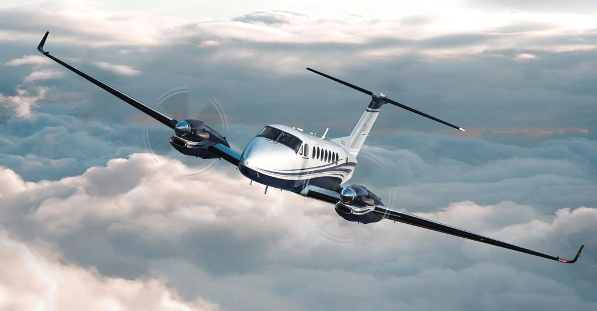
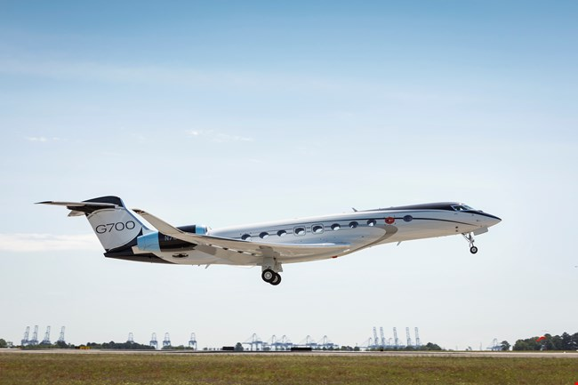
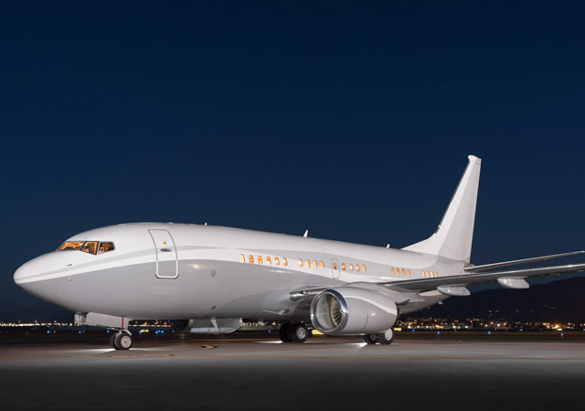

Dentro de nuestra flota de corto alcance para servicio ejecutivo como sanitario se destaca el Beechcraft King Air 350.
- Capacidad:Hasta 10 pax o 3 pacientes + equipo medico
- Alcance:3500 km
- Velocidad crucero:550 km/h
- Techo operativo: 35000 pies

¿Negocios a nivel mundial?,¡Tenemos su transporte!,Nuestro Gulfstream G700 tiene lo que usted necesita.
- Capacidad:19 pax
- Alcance:10500 km
- Velocidad crucero:800 km/h
- Techo operativo:45000 pies

Nuestro Boeing BBJ-700 sera literalmente su hogar en los aires.
- Capacidad:30 pax
- Alcance:16000 km
- Velocidad crucero:900 km/h
- Techo operativo:41000 pies
Nuestras variantes de Cessna Citation equipados unicamente para traslados sanitarios se encuentra disponibles H24 siempre con equipo medico disponible.
- Capacidad: 2 pacientes + equipo medico
- Alcance: 7000 km
- Velocidad crucero:750 km/h
- Techo operativo:45000 pies